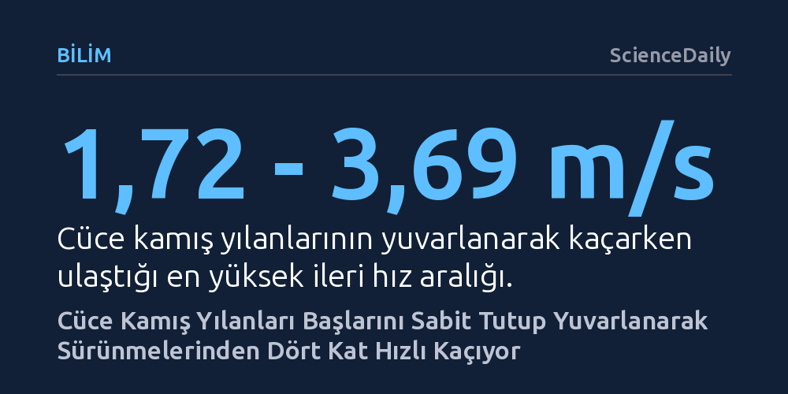

BILIM · ScienceDaily · 2026-10-25
Güneydoğu Asya'daki cüce kamış yılanları, gövdelerini hızla döndürürken başlarını sabit ve ileriye dönük tutarak sürünmelerinden dört kat daha hızlı yuvarlanabiliyor. Bu koordinasyon, tekerlek gibi mekanik bir eksenleri olmasa da hayvanların yuvarlanarak kontrollü ve son derece hızlı kaçabileceğini kanıtlıyor.
Bir canlının hareket kabiliyetini yalnızca anatomik yapısının değil, kas koordinasyonu ve yenilikçi davranışların belirlediğini göstererek biyolojideki hareket sınırlarını yeniden tanımlıyor.

Güneydoğu Asya'nın orman tabanında yaşayan cüce kamış yılanları (Pseudorabdion), ölümcül bir tehlikeyle karşılaştıklarında alışıldık sürüngen hareketlerinin tamamen dışına çıkıyor. Yılanların milyonlarca yıldır kullandığı sağa sola kıvrılma yöntemi olan yanal dalgalanma yerine, tüm bedenlerini bir tekerlek gibi öne doğru savurarak yuvarlanıyorlar. Saha gözlemlerinde daha önce rastlanan ancak mekanizması anlaşılamayan bu hareket, yırtıcılardan kaçarken başvurulan bilinçli bir acil durum manevrası niteliği taşıyor.
Toho Üniversitesi araştırmacılarının çok açılı yüksek hızlı kameralarla yürüttüğü inceleme, bu yuvarlanmanın kontrolsüz bir tepetaklak düşüş olmadığını kanıtladı. Yılanlar yuvarlanırken saniyede 1,72 ila 3,69 metre gibi küçük bir sürüngen için baş döndürücü hızlara ulaşıyor. Bu rakam, aynı hayvanların normal sürünme hızının tam dört katına denk geliyor. Üstelik yılanlar bu muazzam sürate rağmen sadece 20 santimetre genişliğindeki dar bir test parkurunda bile rotadan sapmadan ilerlemeyi başarıyor.
Mühendislik açısından yuvarlanmak son derece verimli bir hareket biçimi olsa da biyolojide neredeyse hiçbir omurgalı bu yolu tercih edemez. Bir tekerlek, sabit bir aks veya mil etrafında sürekli dönerek üstündeki gövdeyi sarsmadan taşır. Oysa hayvanlar aleminde gövdeyi baştan ve duyu organlarından mekanik olarak ayıran bağımsız bir mil yapısı bulunmaz. Bütün vücut birlikte döndüğünde baş da sürekli fırıldak gibi döneceğinden canlının dengesini koruması, çevresini görmesi ve yönünü tayin etmesi imkânsızlaşır.
Cüce kamış yılanları bu mekanik engeli zekice bir kas koreografisiyle aşıyor. Yılanlar tüm vücutlarını tek parça halinde döndürmek yerine, döngüsel bir itme sekansı uyguluyor. Hareket sırasında yılan önce bir yanı üzerinde yuvarlanıyor, ardından gövdesinin kıvrımlı bir bölümünü başının yanından aşağı doğru güçlü bir şekilde savuruyor. Araştırmacıların darbe vuruşu olarak adlandırdığı bu hareket, bir sonraki döngüde karşı tarafa geçiyor; yani sola ve sağa yapılan vuruşlar art arda tekrarlanarak kesintisiz bir ileri yuvarlanma ivmesi yaratılıyor.
Araştırmanın en şaşırtıcı keşfi, yılanın gövdesi yüksek devirle dönerken baş bölgesinde gerçekleşen kararlılık oldu. Bedenin arka ve orta kısımları hızla takla atarken, baş dönme hareketine katılmıyor; sürekli ileriye, gidilmek istenen hedefe doğru kilitlenmiş halde kalıyor. Bir eksen mili olmaksızın sergilenen bu bağımsız hareket kabiliyeti, modern jiroskobik kamera sabitleyicilerini andıran bir biyolojik dengeye işaret ediyor.
Bilim insanları yılanların sadece baş yönünü değil, başın yerden yüksekliğini de neredeyse sabit tuttuğunu belirledi. Özellikle kaçış hızının en tepe noktaya çıktığı anlarda yılanlar başlarını hafifçe yukarı kaldırıyor ve dikey sarsıntıları asgari düzeye indiriyor. Başın dönmemesi ve stabil kalması, yılanın aşırı hız altındayken bile nereye gittiğini görmesini, engellerden kaçmasını ve hedeflenen yönde kalmasını mümkün kılıyor.
Bu bulgular, evrimsel biyolojideki temel kabullerden birini sarsıyor: Bir canlının yapabilecekleri yalnızca kemik, eklem ve uzuv morfolojisiyle sınırlı değildir. Cüce kamış yılanı, gövdesinde tekerlek benzeri hiçbir anatomik yapı barındırmamasına rağmen, vücudunu işlevsel olarak ikiye ayırmayı başarıyor. Gövde itici bir motor ve tekerlek işlevi görürken, baş sabit bir kontrol kulesi olarak çalışıyor.
Kasların bu denli incelikli bir zamanlamayla eşgüdümlü çalışması, fiziksel kısıtlamaların yenilikçi davranışlarla aşılabileceğini gösteriyor. Doğa, canlılara tekerlek ya da dönen akslar bahşetmemiş olabilir; ancak cüce kamış yılanının sergilediği bu akrobasi, doğru kas kontrolüyle biyolojinin sınırlarının nasıl esnetilebileceğinin en somut ve zarif kanıtını sunuyor.